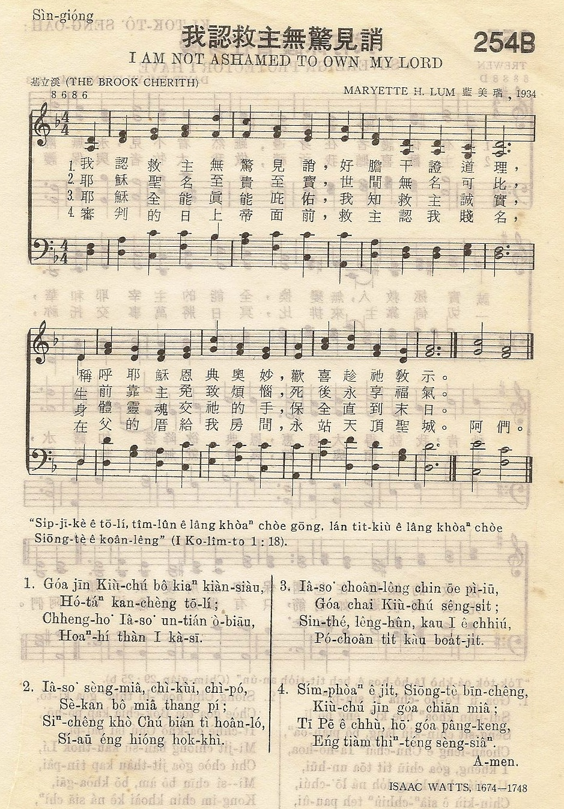
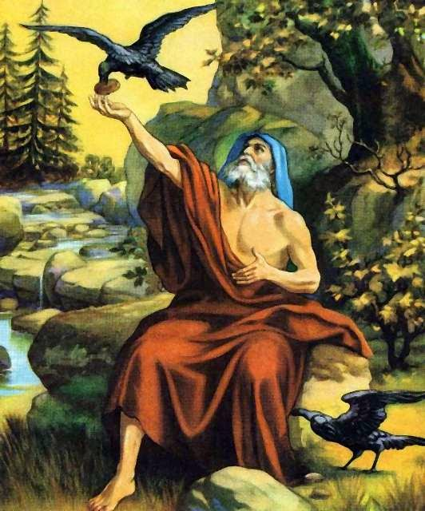

|
|
颂主新歌 |
|
|
1.虽然世俗轻我凌我，甚至亲友离我， |
|
|
|

| First Line: | Though all men revile and hate me |
| Translator: | Frank W. Price |
| Author: | Chi-pi Ni |
Tune Information
| Title: | THE BROOK CHERITH |
| Composer: | Maryette H. Lum (1936) |
| Meter: | 8.6.8.6 |
| Incipit: | 13451 74342 1171 |
| Key: | d minor |
詞 倪其瑟
曲 藍美瑞（Maryette H﹒Lum） 基立溪

作曲／B調／藍美瑞（Maryette H﹒Lum）（1934作）
作詞／以撒瓦特（Isaac Watts）（1674-1748
https://m.xuite.net/blog/weikuo.mr/tahymns/47459219
NEW BING:
基立溪 (Kerith) [詳解編號 : 0901]
峽谷 Gorge，濠溝 Trench，一開鑿之物 A cutting
●Wadi al Yabis 小溪，又稱為雅比河，是約但河在基列地的支流，自東往西流入約但河，其出口處在加利利湖之南約 35 公里，長約 25 公 里。其北岸有提斯比和基列雅比城。但是在中世紀的傳統中，認為基立溪是約但河以西的 Wadi Kelt，即是耶利哥城北側的一條旱溪，在耶利哥城西方約五公里溪畔，北岸的峭壁上，有一座名叫 Monastery of St.George的修道院，其上方有一石窟，相傳是先知以利亞藏身之處，石窟旁有一個小聖堂，即是為紀念以利亞而建。
王上17:3 耶和華對以利亞說，你離開這裡，往東去，藏在約但河東邊的基立溪旁，你要喝那溪裡的水，我已吩咐烏鴉在那裡，早晚叼肉和餅來供養你。
列王紀上 17章3節
你離開這裡、往東去、藏在約但河東邊的基立溪旁。http://biblegeography.holylight.org.tw/index/condensedbible_detail?id=1911&num=true
在生命的基立溪旁
第 2192 期（2006 年 8 月 27 日） ◎ 神學探索 ◎ 吳約翰（台灣）
分享：  Whatsapp ::
Whatsapp ::  電郵 ::
電郵 ::  臉書 ::
臉書 ::  推特
推特
在聖經列王記上十七章開頭，記載先知以利亞接到上帝的吩咐，叫他「藏在約旦和東邊的基立溪旁。」這裡的意思是叫以利亞學習一段時間「隱藏」起來，以便能夠和神有更親密的關係。
有些傳道人雖然有很忙的牧會生活，要探訪、講道、教導，也要參加會友的婚喪喜慶，可說忙得焦頭爛額。但是他們確有「隱藏」的生活。就是讀經、禱告靈修親近主。就像馬丁路得說他一天如果沒有三小時以上的禱告，那天就會失敗。
有時候，基督徒因為生病、失業、親人死亡在嚴重的「失落感」中，感覺好像神離我們非常遙遠，我們也離神很遠。這時候，我們可能會運用自己的頭腦來解決問題，或運用自己的人際關係來處理目前的難題。譬如一個失業的基督徒可能會告訴自己的牧師或會友甚至朋友，讓他們來幫你尋找工作，但是當你對人寄望愈大的時候，你可能會失望愈大。
上帝叫以利亞隱藏在基立溪。這時候上帝對他說：「你要喝哪裡的溪水，我已吩咐烏鴉在那裡供養你。」溪水是上帝為以利亞準備的。上帝是幽默的，他派出長相「較醜」的烏鴉來供應以利亞，可能是上帝要用一個不「起眼」的人來幫助你。有時候，我們在困境的時候，一些幫助我們的人卻不是我們意料得到的。
以利亞相信上帝的話，「去住在約旦河東的基立溪旁，烏鴉早晚給他叼餅和肉來，他也喝那溪裡的水」（王上十七5-6）。如果上帝在我們缺乏的時候，叫我們到淡水河旁、濁水溪旁或高屏溪旁，說烏鴉在那裡會供應我們的生活，我們會不會順服的走到溪旁？或是我們會要求上帝派外表較有「仙氣」的白鷺鷥來供應我們生活？ 「凡事都有定時」，以利亞在基立溪旁的等候也有時。當上帝的時間到了，「過了些日子，溪水就乾了，因為雨沒有下在地上。」所以是以利亞離開基立溪的時候。
在十七章八至九節，記載耶和華的話臨到他說：「你起身往撒勒法去，住在那裡；我已吩咐那裡的一個寡婦供養你。」以利亞真是一個順服的先知。他沒有問上帝說：「上帝啊！你有沒有弄錯？你應該派一個有錢有勢的人來接待我才是。寡婦又沒有丈夫，生活恐怕都成問題了，還能供養我？」所以上帝知道以利亞是有信心的先知，才會給他這樣的試煉。
同章十二節記載的寡婦說：「壇內只有一把麵，瓶裡只有一點油；我現在找兩根柴，回家要為我和我兒子做餅，我們吃了，死就死吧！」寡婦說她吃完這人生最後的一餐，就要和小孩同赴黃泉。但想不到先知以利亞帶給她們的是「吃了許多日子，壇內的麵果不減少，瓶裡的油也不短缺，正如耶和華藉以利亞所說的話。」（15-16節）
耶穌在馬太福音十章四十一節說：「人因為先知的名接待先知，必得先知所得的賞賜。」可說是有感而發，耶穌他自己有時候也「不被當成先知」接待，祂希望門徒能夠被「當成先知接待」，但耶穌的門徒最後仍走耶穌的腳蹤—殉道。現代的教會是否能夠好好的對待傳道人，可以印證「接待先知必得先知的賞賜」這句話。
上帝派烏鴉和寡婦供養以利亞，兩樣皆是人瞧不起的，上帝要我們學習不要「看輕」任何人（或動物）。哲學家尼采認為「基督教是懦弱」的宗教，耶穌被釘十字架卻默默無聲，因此他提倡「超人」哲學，「軟弱的人應該被消滅」，而造成希特勒的屠殺猶太人，跟尼采頗有關係。但是他卻不知「軟弱中剛強」的真理，實在很可惜。
當我們面臨生命的逆境時，我們要靠神在基立溪旁，相信神會供應我們的需要。
http://www.christianweekly.net/2006/ta13055.htm
